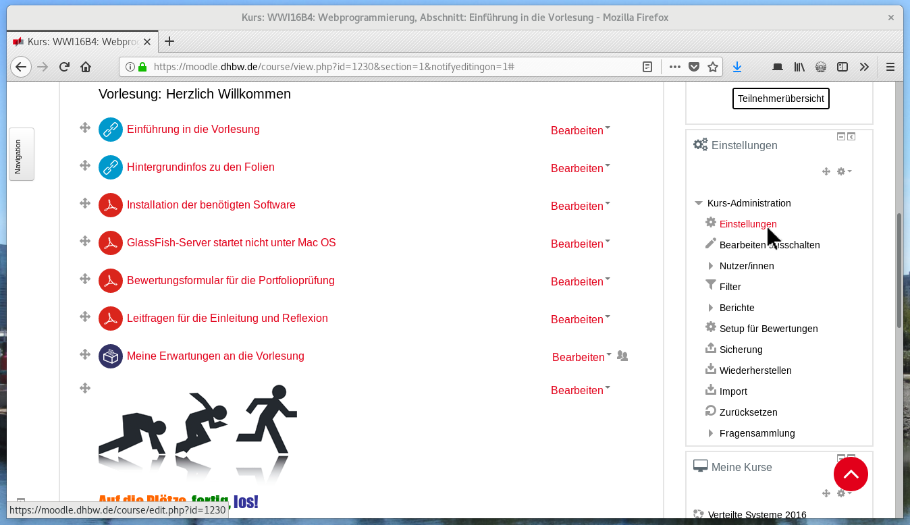
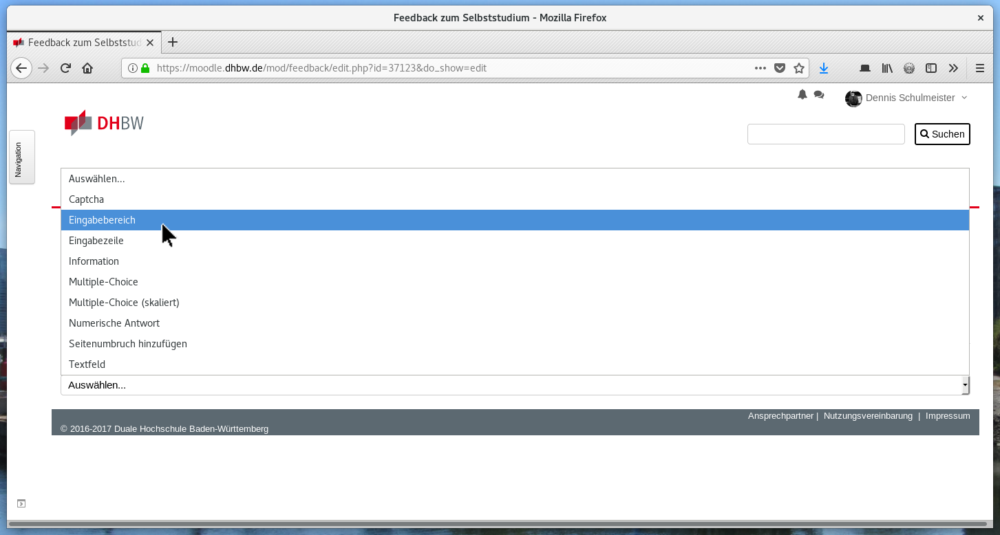

Vielen Dank, dass Sie uns bei der Erstellung der Modulbausteine
unterstützen. Die nachfolgenden Seiten sollen Ihnen dabei einen
kleinen Einstieg bieten und nochmal auf die wichtigsten Dinge
hinweisen. Bei Fragen kommen Sie einfach auf uns zu.
Ihr DigiTransMoBiL-Projektteam
DigiTransMoBiL
Kurzvorstellung des Projekts
DigiTransMoBiL ist ein Projekt an der DHBW Karlsruhe, gefördert im Rahmen des
Förderprogramms „Curriculum 4.0“ durch den Stifterverband und die Carl-Zeiss-Stiftung.
mit dem Ziel, eine komplette Modulschiene des Studiengangs Wirtschaftsinformatik
an den Kompetenzzielen der digitalen Transformation auszurichten und mit innovativen
Lehr- und Lernformen zu gestalten.
Weiterentwicklung von Lehrveranstaltungen
Webprogrammierung und Verteilte Systeme
Pilotveranstaltung zu „Digitale Transformation“
Entwicklung neuer Modulbausteine
Industrie 4.0 in der Gesellschaft und Arbeitswelt
Machine Learning
Anwendungsentwicklung für Smart Devices mit Sprachsteuerung
Technische Hintergründe und Einsatzgebiete von Blockchain
Systemarchitektur, Hardware und Protokolle eingebetteter IoT-Devices
Innovative Lehr- und Lernformen
Inverted Classroom und Blended Learning
Portfoliobasierte Prüfungsform
Constructive Alignment von Lehrinhalten und Prüfungsleistungen
Sharing- und Innovationsmodell
Peer-Review und kontinuierliche Evaluation aller Bausteine
Laufende Pflege und Aktualisierung der Bausteine
Offene Creative Commons Lizenzen: CC-BY, CC-BY-SA oder CC-NC-BY-SA
Veröffentlichung als OER im zentralen Moodle der DHBW
Bevor es losgehen kann
Auf das richtige Dateiformat kommt es an
Für die Übernahme und Pflege der Unterlagen benötigen wir alle Quelldateien von Ihnen.
Offene Formate und betriebssystemunabhängige Programme sollten dabei vorgezogen werden.
Sämtliche Unterlagen müssen mit einer eindeutigen Lizenz versehen werden.
Folgende Lizenzen stehen Ihnen hierfür zur Verfügung:
CC-BY
CC-BY-SA
CC-BY-NC
CC-BY-NC-SA
Sie alle erlauben das freie Teilen und Bearbeiten der Materialien.
NC verbietet die kommerzielle Nutzung, beispielsweise in Fachbüchern.
SA verbietet, abgeleitete Versionen unter eine weniger freie Lizenz zu stellen.
Empfehlung: Wählen Sie CC-BY oder CC-BY-SA, da sie die meisten Freiheiten bieten.
Je zwei Blöcke bestehend aus Selbststudium und Präsenzvorlesung.
Insgesamt also zwei Selbststudiums- und zwei Vorlesungseinheiten.
Entspricht ⅔ Credit Points im Workload-Modell der DHBW.
VLh = Vorlesungsstunde (45 Minuten)
Portfoliobasierte Prüfungsform
Je Modulbaustein ein schriftliches Prüfungsartefakt.
Bearbeitung der Prüfungsaufgabe im Selbststudium oder in Präsenz.
Zusätzlich ein Einleitungs- und ein Reflexionsbericht je Student.
Constructive Alignment und Planung der Inhalte
Kompetenzorientiertes Studienmodell
Jede Lehrveranstaltung zielt auf den Ausbau und Erwerb von Kompetenzen ab. Sachkompetenz: Welche Inhalte eignen sich die Studierenden an? Selbstkompetenz: Welche fachlichen Fähigkeiten erwerben die Studierenden? Handlungskompetenz: Welche beruflichen und gesellschaftlichen Fähigkeiten erwerben sie?
Constructive Alignment
Kompetenzziele, Lernziele, Lerninhalte und die Prüfung bauen aufeinander auf.
Es wird nur geprüft, was auch vermittelt wird und umgekehrt.
Die Kompetenz- und Lernziele werden am Anfang des Selbststudiums beschrieben.
Moodle erlaubt es, einen Raum in mehrere Themen zu gliedern.
Jedes Thema wird durch einen grauen Rahmen und eine Überschrift gekennzeichnet.
Die Themen sollten der Gliederung der Vorlesung entsprechen.
Zum Anlegen der Themen klicken Sie zunächst oben auf „Bearbeiten einschalten”.
Dadurch werden am Ende der Seite zwei Buttons zum Anlegen und Verbergen der Themen sichtbar.
Alternativ können Sie auch im Bereich „Kurs-Administration” den Eintrag „Einstellungen” auswählen.
Dort gibt es dann den Abschnitt „Kursformat” mit der Option „Anzahl der Abschnitte”.
Den Namen eines Themas können Sie mit dem kleinen Bleistift rechts davon bearbeiten.
Oder Sie wählen unter „Bearbeiten“ den Eintrag „Thema bearbeiten” aus.
Dort können Sie dann auch eine im Kursraum sichtbare Beschreibung hinterlegen.
Das war es auch schon. Denken Sie daran, jedem Thema eine aussagekräftige Überschrift und bei
Bedarf auch eine Beschreibung zu geben.
Bei großen Kursen mit vielen Materialien kann es sinnvoll sein,
die Darstellung auf Tabreiter umzustellen.
Hierzu wählen Sie im Bereich „Kurs-Administration” den Eintrag „Einstellungen” aus.

Dort gibt es dann den Abschnitt „Kursformat” mit der Option „Format”, die Sie auf „Ein-Themen-Format” ändern.
Damit wird jedes Thema automatisch in einem eigenen Reiter dargestellt.
Wollen Sie die Reiter farbig hervorheben, klicken Sie hierfür auf „Bearbeitern” und „Abschnitt bearbeiten”.
Die Farbcodes werden dann in
die beiden Felder „Schriftfarbe” und „Hintergrundfarbe” eingetragen.
Fertig! Und schon werden auch große Kurse sehr übersichtlich.
Per Drag'n'Drop lassen sich ganz einfach PDF-Dateien in Moodle hochladen.
Über das kleine Fadenkreuz lassen sich die Dateien danach verschieben.
Für Studenten sind die PDF-Dateien ideal, für andere Dozenten allerdings nicht.
Klicken Sie daher auf „Bearbeiten” und „Einstellungen”, um weitere Dateien anzuhängen.
Per Drag'n'Drop in den Dateibereich lassen sich hier auch die Quelldateien hochladen.
Die fett markierte Datei ist die sogenannte „Hauptdatei”. Das ist die Datei, die für die Studenten gedacht ist.
Um die Hauptdatei zu wechseln, klicken Sie die Datei an und drücken dann auf „Hauptdatei setzen”.
Schon fertig! Nun können andere Dozenten auch die Quelldateien in ihre Vorlesungen übernehmen.
Beachten Sie aber bitte, dass wir Ihnen weiter hinten eine bessere Möglichkeit zeigen, die Quelldateien zu teilen.
Um einen neuen Onlinetest anzulegen klicken Sie am Ende eines Themenabschnitts auf „Material oder Aktivität hinzufügen”.
Wählen Sie links den Eintrag „Test” aus und klicken Sie dann auf „Hinzufügen”.
Als Name tragen Sie „Vorwissensabfrage” oder „Lernkontrolle” ein. Die anderen Felder können leer bleiben.
Im Bereich „Fragenanordnung” wählen Sie bitte Neue Seite → „Nie, alle Fragen auf einer Seite” aus.
Unter „Gesamt-Feedback” können Sie Feedbacktexte für unterschiedliche Testbewertungen hinterlegen.
Ganz unten klicken Sie dann auf „Speichern und anzeigen”, um zur nächsten Seite zu gelangen.
Da der Test noch keine Fragen hat, erscheint in der Mitte der Knopf „Testinhalt bearbeiten”.
Später befindet sich die Option allerdings nur noch am rechten Bildschirmrand.
Um eine Frage anzulegen, klicken Sie auf „Hinzufügen” und dann auf „Frage hinzufügen…”.
Wie Sie sehen, gibt es viele verschiedene Fragetypen. Nicht alle können aber automatisch bewertet werden.
Beschränken Sie sich daher lieber auf ein paar wenige Fragetypen, die sich automatisch korrigieren lassen.
Hier sehen Sie ein Beispiel für eine Multiple-Choice-Frage. Beachten Sie die Werte im Feld „Erreichbare Punktzahl”
und bei der Bewertung der Fragen. Die Frage hat vier richtige Antworten, daher beträgt die Gesamtpunktzahl vier und
jede richtige Antwort wird mit 25% gewertet.
So sieht der fertige Test mit der eben erstellten Frage aus.
Das war es auch schon. Die Anlage der Tests ist zwar sehr aufwändig, dafür bietet Moodle aber viele Möglichkeiten.
Jedes Kapitel sollte daher einen einfachen Test als „Vorwissensabfrage” sowie einen schwierigen Test als „Lernkontrolle” besitzen.
Um einen neues Feedback-Formular anzulegen klicken Sie am Ende eines Abschnitts auf „Material oder Aktivität hinzufügen”.
Wählen Sie links den Eintrag „Feedback” aus klicken Sie dann auf „Hinzufügen”.
Als Name tragen Sie zum Beispiel „Feedback zum Selbststudium” ein.
Die Studenten schätzen, dass die Feedbacks standardmäßig anonym sind.
Wollen Sie die Feedbacks benoten, müssen Sie aber auf „Nicht anonym” umstellen.
Mit „Speichern und ansehen” kommen Sie dann auf diese Seite.
Klicken Sie hier auf „Elemente bearbeiten”, um neue Fragen anzulegen.
Klappen Sie die Auswahlliste auf und wählen Sie „Eingabebereich” für eine Frage mit mehrzeiliger Antwort aus.

Die Bezeichnung ist hier zwar ein Pflichtfeld, wird den Studenten aber nicht angezeigt.
Um eine Vorschau des Formulars sehen zu können, müssen Sie erst die Rolle wechseln.
Als Rolle wählen Sie „Teilnehmer/in” aus. Dadurch sehen Sie die Welt aus Sicht der Studenten.
Wenn alles geklappt hat, sollten Sie nun die Option „Formular ausfüllen…” angeboten bekommen.
So sieht das fertige Formular aus. Die Fragen haben sich in der Vergangenheit bereits bewährt.
Um wieder zur alten Ansicht zurückzukehren, wählen Sie im Benutzermenü „Zurück zur Ausgangsrolle” aus.
Soweit so gut. Feedback-Formulare sind eine gute Möglichkeit, die Studierenden in die Vorlesung
einzubeziehen. Dabei hat es sich bewährt, nach jedem Kapitel die eben gezeigten drei Fragen zu stellen,
um damit die nächste Stunde zu beginnen. Das Feedback sollte hierzu als verpflichtend kommuniziert werden.